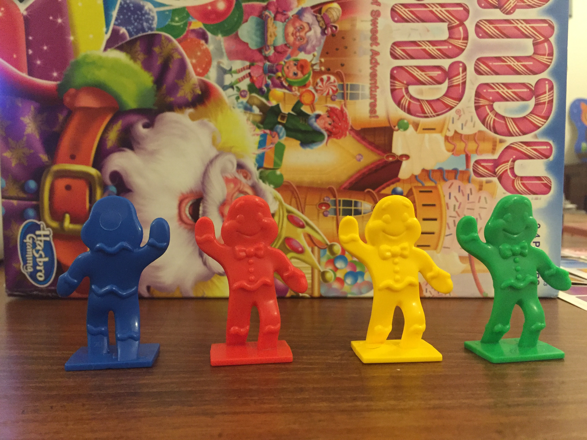

2. You can proceed the number of squares showed on your card on the gamebroad and jump to the same color as the card showed.
Welcome to Alex's Wonderland
Contents:
SETUP:
2.shuffle the cards and place them facedown in a pile within easy reach of all players.
Introduction of the gameplay
2. If you are not the highet points player but you arrive at the end firstly, you should turn back to the halfway.
3.The player who has highest scores and arrive at the final first, is the winner.
Specific details about the instrument
1.When you pick up a card which doesn't have the colorful square, you can jump to the place the picture showed for directly.
2. You can proceed the number of squares showed on your card on the gamebroad and jump to the same color as the card showed.

2. You can proceed the number of squares showed on your card on the gamebroad and jump to the same color as the card showed.